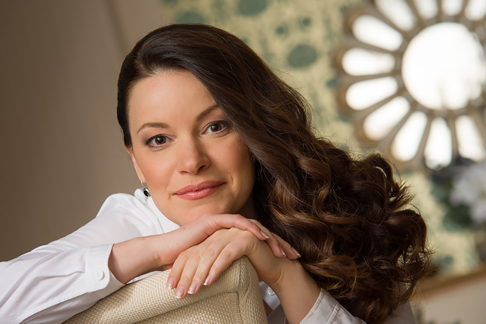

Наши специалисты

Анна Иванова
Психолог, стаж более 10 лет, специализация на детской психологии.
Опыт работы: Более 10 лет работы с детьми и подростками.
Образование: Московский государственный университет, диплом психолога, дополнительное образование в области арт-терапии.
Профиль лечения: Дети, подростки, тревожные расстройства, депрессии, школьные проблемы, проблемы с социализацией.
Использует подходы: Когнитивно-поведенческая терапия, арт-терапия, игровая терапия.
Сможет помочь: Помощь детям и подросткам в преодолении тревожности, стрессов, проблем с обучением и самооценкой.
Иван Петров
Клинический психолог, стаж 8 лет, помогает справляться с депрессиями и тревожными расстройствами.
Опыт работы: 8 лет в области клинической психологии.
Образование: Московский институт психоанализа, диплом клинического психолога.
Профиль лечения: Депрессии, тревожные расстройства, панические атаки, психосоматические заболевания.
Использует подходы: Когнитивно-поведенческая терапия, психодинамическая терапия, релаксационные техники.
Сможет помочь: Помощь в преодолении депрессий, тревог, стресса, панических атак, восстановление психоэмоционального равновесия.

Мария Смирнова
Семейный психолог, опыт работы более 12 лет, помогает парам наладить отношения.
Опыт работы: Более 12 лет в области семейной психологии.
Образование: Санкт-Петербургский государственный университет, диплом семейного психолога.
Профиль лечения: Семейные проблемы, разводы, кризисы, воспитание детей, улучшение отношений в паре.
Использует подходы: Системная терапия, гештальт-терапия, эмоционально-фокусированная терапия.
Сможет помочь: Помощь в решении семейных конфликтов, улучшение отношений, кризисы в отношениях, работа с воспитанием детей.